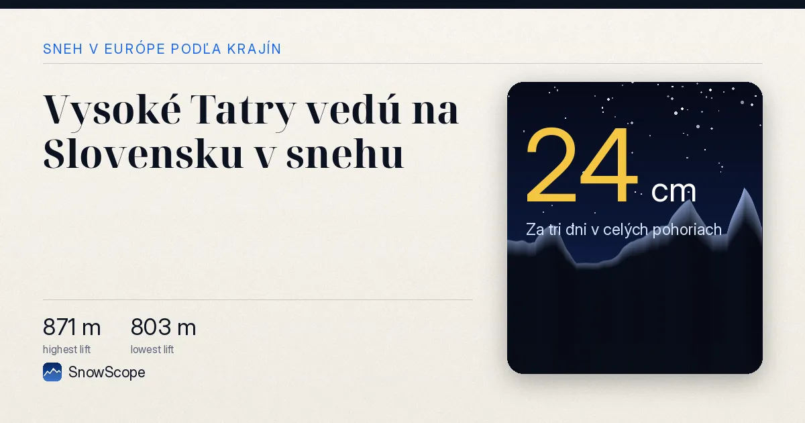

Vysoké Tatry vedú na Slovensku v snehu: 24 cm za tri dni v celých pohoriach
Posledné tri dni priniesli 16 cm na najvyššie zjazdovky Slovenska, ale sneh padal v jasných pásmach podľa nadmorskej výšky a pohorí. Vysoké Tatry a Nízke Tatry zachytili po 24 cm za 72 hodín, zatiaľ čo nižšia Malá Fatra zaznamenala 14 cm—vzorec, ktorý nám hovorí, kde hľadať a kde sa vyhnúť.
Pozrite si predpoveď snehu pre Ski centrum Dedinky v aplikácii SnowScopeVýška snehu, upozornenia a 3D mapa, zadarmo.
Kde sneh padal: hory, nie údolia
Keď sa pozriem na sneh za posledné tri dni po Slovensku, príbeh je jasný: nadmorská výška rozdelila víťazov od porazených. Vysoké Tatry a Nízke Tatry získali po 24 cm. Toto sú najvýznamnejšie pohoria krajiny, ktoré stúpajú nad 2000 m, kde je vzduch dosť vlhký a chladný na to, aby zadržal sneh. Malá Fatra, nižšia a ďalej na západe, dostala 14 cm—stále užitočné, ale polovica toho, čo padlo na najvyšších vrcholoch.
Pod 1200 m, hranica snehu, sa skoro nič neuchytilo. Ski centrum Dedinky v nadmorskej výške 871 m videlo len 1 cm za 72 hodín, napriek tomu že na zemi drží 38 cm z predchádzajúceho počasia. Lekcia: ak hľadáte čerstvý sneh na Slovensku práve teraz, musíte ísť vysoko. Hory nad 1500 m sú biele; nižšie pohoria sú stále väčšinou holé.
| Stredisko | Výška snehu | Nový sneh, 72 h | Ďalšie dni | Vrchol |
|---|---|---|---|---|
| Ski centrum Dedinky | 38 cm | 1 cm | 0 cm | 871 m |
| Vysoké Tatry | 30 cm | 20 cm | 7 cm | 2 182 m |
| Skipark Erika | 26 cm | 1 cm | 2 cm | 1 204 m |
| Jasna Low Tatras | 23 cm | 24 cm | 9 cm | 2 003 m |
| Roháče | 23 cm | 15 cm | 9 cm | 1 496 m |

Tri dni nového snehu, mapované podľa výšky
Náš model snehu ukazuje hĺbku snehu v rôznych nadmorských výškach v celých 18 610 štvorcových kilometroch, ktoré sledujeme. Medzi 1500 a 2000 m je priemerná hĺbka teraz 16 cm a každý zjazdovka je pokrytá. Nad 2000 m hĺbka stúpa na priemerne 27 cm a pokrytie je úplné. Tento čerstvý sneh leží na starších vrstvách—snehová pokrývka na najvyšších nadmorských výškach sa postupne buduje.
Len 680 štvorcových kilometrov Slovenska videlo 5 cm alebo viac nového snehu za posledné tri dni. To je úzke pásmo: hlavne nad 1500 m vo Vysokých Tatrách, Nízkych Tatrách a častiach Malej Fatry. Zvyšok krajiny, vrátane stredných nadmorských výšok, dostali menej. Tento nerovnomerný vzorec je typický pre november vo vysokých pohoriach. Studené vzduchové masy sa zrazujú nad vrcholmi; údolia zostávajú suché.

Najvyššie vrcholy vedú; nižšie strediská zaostávajú
Vysoké Tatry, ktoré dosahujú 2182 m, teraz drží 30 cm a získali 20 cm za tri dni. Jasná Nízke Tatry, ktoré dosahujú 2003 m, drží 23 cm a pridali 24 cm—najdramatickejší nárast v sledovaných stredisku. Oba sú pripravené na ďalších sedem dní, keď náš model predpovedá až 18 cm ďalšieho snehu. Roháče, v nadmorskej výške 1496 m, zaznamenali 23 cm hĺbky so 15 cm nového snehu, tiež solidne.
Ski centrum Dedinky a Skipark Erika, oba pod 1200 m, drží 38 cm a 26 cm v tomto poradí, ale ani jeden nevidel zmysluplný čerstvý sneh nedávno. Ich zásoby pochádzajú z predchádzajúcich búrok. Ak november sneh zostane vysoko, ako náš model naznačuje, tieto nižšie strediská sa budú tiaž udržať relevantné, kým teplejšia perióda neuloží sneh dole na 1000 m alebo nižšie.
Čo očakávame ďalej: viac snehu na vrchu
V nasledujúcich troch dňoch náš model ukazuje príchod až 7 cm. Vysoké Tatry a Nízke Tatry by mali zachytiť väčšinu. Do 26. novembra jeden deň môže priniesť 10 cm na najvyššie vrcholy. Pozerajúc sa dopredu sedem dní, celková predpoveď dosahuje 18 cm vo vysokých nadmorských výškach—solidná akumulácia na konci novembra.
Prvý podstatný sneh pre mnohé nižšie zjazdovky prichádza 20. novembra—len jeden deň ďalej—ale bude ľahký. Ak chcete hĺbku a spoľahlivé pokrytie, ostaňte vysoko a budite trpezliví. Najlepšie okno pre budovanie snehu sa otvára okolo 26. novembra.
Trend a výhľad
Za posledné štyri dni sa biela plocha Slovenska zmenšila z 2340 štvorcových kilometrov na 2010 štvorcových kilometrov dnes, aj keď Vysoké Tatry a Nízke Tatry akumulovali čerstvý sneh. To znamená, že nižšie nadmorské výšky stratili sneh rýchlejšie, ako ho najvyššie vrcholy získali—znamenie kolísavých teplôt blízko 0 °C v stredných nadmorských výškach. Sneh sa konsoliduje na vrchu.
Pozerajúc sa za tento týždeň, druhý týždeň predpovede (27. november až 3. december) prináša až 11 cm ďalšieho. Lyžiarska sezóna Slovenska sa buduje, ale zostáva to hra na vysokých horách. Všetko závisí na tom, či sa chlad udržuje.
Čítanie pásiem nadmorskej výšky
Profil hĺbky modelu ukazuje výrazný rozdiel medzi nadmorskými výškami. Od 500 do 1000 m je priemerný sneh nula; od 1000 do 1500 m je to 2 cm s pokrytím len 42 percent. Skočte na 1500–2000 m: 16 cm, 100 percent pokrytie. Na 2000–2500 m: 27 cm, úplné pokrytie. Toto je horský sneh v jeho najčistejšej forme—vertikálna stena bielej vysoko nad zelenými nižšími pohoriami. To je dôvod, prečo Vysoké Tatry a Nízke Tatry sú jedinou strediskami, ktoré stojí za to sledovať na Slovensku tento týždeň.
Tipy pre lyžiarov
- Jazdte do Vysokých Tatier alebo Jasnej Nízke Tatry nad 1500 m. Čerstvý sneh je tam; nižšie strediská majú skoro nič.
- Očakávajte 18 cm ďalšieho snehu do konca novembra vo vysokých nadmorských výškach. Plánujte svoju návštevu od 26. novembra ďalej, ak chcete hĺbku.
- Línia snehu je dnes na 1200 m. Všetko pod 1000 m je príliš nízko na spoľahlivé pokrytie tento týždeň.
- Pred jázdom mimo zjazdovky skontrolujte oficiálny lavinový biletín pre Vysoké Tatry a Nízke Tatry; čerstvý sneh na strmých zjazdovkách predstavuje riziko.
- Použite aplikáciu SnowScope na sledovanie hĺbky a predpovede na vašej zvolené nadmorskej výške strediská.
About these numbers
Resort snow depths are the deepest snow on the resort's upper slopes from the SnowScope snow model (about 1 km, run of 19. novembra); they are estimates for an area, not a measurement at one point. Station values are measurements on the date shown. Forecasts can change. Always read the official avalanche bulletin before going off-piste.
Cite this report
For research, teaching or the press: the numbers and charts are free to reuse under CC BY 4.0 with this citation.
SnowScope (2026), Vysoké Tatry vedú na Slovensku v snehu: 24 cm za tri dni v celých pohoriach, https://snowscope.app/blog/sk/2026/11/slovakia-where-the-snow-fell-19-november-2026.html, accessed 2026-11-19
SnowScope (Atlas Labs). (2026, November 19). Vysoké Tatry vedú na Slovensku v snehu: 24 cm za tri dni v celých pohoriach. SnowScope snow reports. https://snowscope.app/blog/sk/2026/11/slovakia-where-the-snow-fell-19-november-2026.html
BibTeX
@misc{snowscope2026slovakiawherethesnowfell,
author = {{SnowScope (Atlas Labs)}},
title = {Vysoké Tatry vedú na Slovensku v snehu: 24 cm za tri dni v celých pohoriach},
year = {2026},
month = nov,
howpublished = {\url{https://snowscope.app/blog/sk/2026/11/slovakia-where-the-snow-fell-19-november-2026.html}},
note = {Published 2026-11-19 13:34 UTC; accessed 2026-11-19}
}· CC BY 4.0 · Methods, data and tools →
Ski centrum Dedinky: snow and temperature by height, this winter vs last (tools) →
Follow Ski centrum Dedinky
Zadarmo: správa, keď prichádza nový sneh, a predpoveď každé ráno.